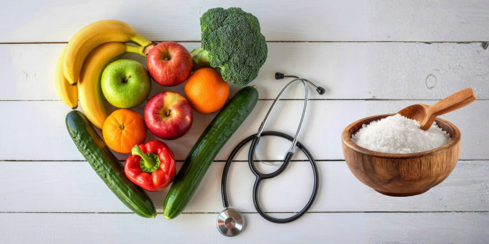

A Mudança Invisível: Como o Sal de Potássio pode Reduzir o Risco de Infarto em 15%
Conselho Editorial Portal BioMed
Informação baseada em estudos cardiovasculares internacionais

A Descoberta da Década
Estudos com mais de 20.000 participantes demonstraram que substituir o cloreto de sódio comum por uma mistura enriquecida com cloreto de potássio reduz significativamente os eventos cardiovasculares maiores (infartos e AVC).
Sódio vs Potássio: A Guerra nas Suas Artérias
Para entender este benefício, devemos olhar a nível molecular. O sódio e o potássio trabalham numa "bomba" biológica que regula a pressão dentro das células.
Sódio (Na+)
Atrai água para as artérias, aumenta o volume sanguíneo e endurece as paredes vasculares, elevando a pressão.
Potássio (K+)
Ajuda os rins a excretar o excesso de sódio e relaxa a tensão nas paredes dos vasos sanguíneos.
Porque o sabor já não é um problema
Historicamente, os substitutos do sal tinham um retrogosto metálico. No entanto, as novas formulações de "Sal Light" ou "Sal de Potássio" conseguiram um equilíbrio onde o sabor é praticamente idêntico ao do sal comum, mas com um perfil mineral protetor.

Quem deve ter precaução?
Embora a mudança seja benéfica para a maioria da população hipertensa, existem exceções importantes. Pessoas com doenças renais avançadas devem consultar o seu médico antes de aumentar a ingestão de potássio, uma vez que os seus rins poderão não processar o mineral adequadamente.
Plano de Ação para um Coração Forte
- Procure no rótulo: Escolha sais que contenham pelo menos 25-30% de cloreto de potássio.
- Aumente os naturais: Dê prioridade a bananas, espinafre e batatas (fontes naturais de potássio).
- Monitorização: Meça a sua pressão arterial semanalmente após realizar a mudança; os resultados costumam ser vistos em 4 semanas.
O Veredito do Portal BioMed
A substituição do sal é uma das intervenções de saúde pública mais rentáveis e eficazes disponíveis hoje em dia. É uma pequena mudança na cozinha que gera um impacto massivo na longevidade.
Fonte: Meta-análise New England Journal of Medicine / Reporte Especial Veja Saúde.
Sofrendo com Formigamentos e Queimação nos Pés e Mãos?
A neuropatia periférica pode acabar com o seu sono e qualidade de vida. Nossa equipe clínica publicou um laudo detalhado sobre um novo suplemento natural neurotrópico que está ajudando a restaurar a saúde dos nervos no Brasil.
Ver Análise Completa do Especialista →